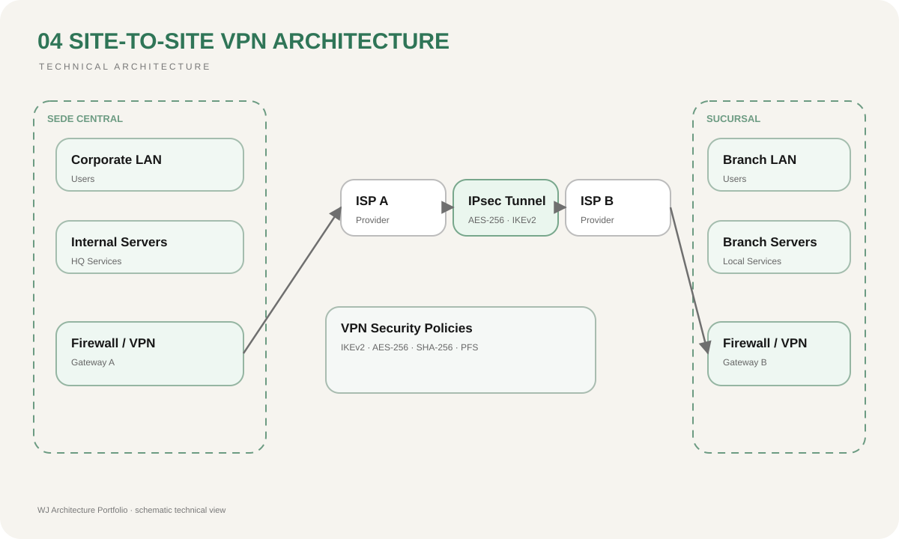

Tráfico entre sedes expuesto
El túnel cifrado protege la comunicación entre ubicaciones remotas.
04 / Secure Connectivity
Interconexión segura entre sede central y sucursal mediante túnel VPN sobre proveedores de Internet distintos.
07 / Risk Reduction
El túnel cifrado protege la comunicación entre ubicaciones remotas.
La segmentación restringe los recursos disponibles entre redes conectadas.
La arquitectura facilita comunicación controlada entre sedes distribuidas.
La definición explícita de redes y flujos reduce caminos de conectividad no previstos.
01 / Context
Una organización con distintas ubicaciones necesita compartir recursos internos sin exponer directamente sus servicios a Internet. La comunicación debe mantenerse confidencial y disponible aun cuando cada sede utilice un proveedor diferente.
02 / Objective
Interconectar de forma segura la sede principal y una sucursal utilizando una VPN sitio a sitio, manteniendo direccionamiento y servicios internos protegidos del tráfico público.
03 / Architecture
La sede central contempla 8 servidores y 40 usuarios: 33 de ventas, 2 de gerencia y 5 de informática. La sucursal de Santa Ana incorpora 20 usuarios de ventas. Cada ubicación utiliza un ISP diferente y el tráfico privado entre ambas sedes atraviesa un túnel cifrado.
04 / Diagram

05 / Decisions
Las redes completas pueden comunicarse sin exigir una conexión VPN individual para cada usuario.
Los datos corporativos atraviesan Internet encapsulados dentro de un túnel protegido.
Solo las subredes y servicios requeridos forman parte del tráfico interesante del túnel.
El diseño no presupone que las dos sedes dependan del mismo proveedor.
06 / Stack
08 / Result
La arquitectura permite que usuarios y servicios de ambas ubicaciones se comuniquen como parte de una infraestructura corporativa, mientras el tránsito sobre Internet permanece protegido mediante cifrado y políticas de acceso.
08 / Lessons
Una VPN no sustituye la segmentación. Después de establecer el túnel siguen siendo necesarias reglas que determinen qué sede, usuario o segmento puede comunicarse con cada servicio corporativo.